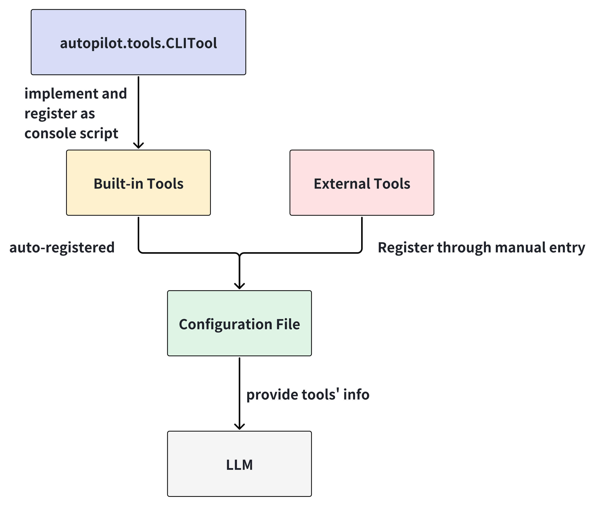

Tool Use for Agents#
Overview#
The terminal agent is expected to use a wide range of tools. We can categorise these tools into 3 types:
native Linux commands as tools, e.g. cat, date
Downloadable third-party command line tool, e.g. curl, metar (a command to check weather)
Our customized tools wrapped as command line interface, e.g. we can wrap browser-use as a CLI tool and access and manipulate the browser in command line.
This section discusses how we can design and manage all the tools mentioned above in a systematic way to support our future development.
Objectives and Design#
We need to propose a architecture to support the following features at this stage.
Support easy addition and management of future tools
Support multi-level/nested commands, e.g. docker ps -> 1 level command, spack config list -> 2 level command.
Support both stateful and stateless commands
Provide a usage manual so that the agent can query and learn how to use it
In order to achieve the above objectives, we design the module as follows:

To understand how the built-in tool and external tools work in autopilot, you can refer to the next section.
How to add a new tool#
Implement a built-in tool#
An built-in tool is a standard tool which is provided by autopilot itself and achieves some general functionalities. Some of the existing built-in tools include browser, calculator, replace and url2md. You can use --help to check how each tool works. Assuming you are an autopilot developer and wish to expand the arsenal of tools, you can follow the steps below to implement a new tool.
Step 1: Implement the tool by inheriting the
autopilot.tools.CLITool. Firstly, you need to give this classnameanddescriptionattributes. Afterwards, you need to implement the tool function and register it as a command through theregistermethod. Please note that when you define your tool function, you need annotate the arguments withtyper’s type hints, e.g.Annotated[str, typer.Argument(help="...")]orAnnotated[int, typer.Option("-n", "--name", help="...")]. You can refer thetyperdocumentation for more details.
from autopilot.tools import CLITool
class HelloTool(CLITool):
name: str = "hello"
description: str = "Say hello to the user"
def __init__(self):
super().__init__()
def say_hello(
self,
name: Annotated[str, typer.Argument(help="The name to say hello to")]
) -> str:
return f"Hello, {name}!"
def register(self):
self.app.command("hello", help="Say hello to the user")(self.say_hello)
Step 2: Register this tool to the
autopilot.tools.TOOLSdictionary.
from autopilot.tools import TOOLS
@TOOLS.register
class HelloTool(CLITool):
...
Step 3: Add this tool to the module init file
autopilot/tools/__init__.py.
from .hello import HelloTool
__all__ = [..., "HelloTool"]
Step 4: Register your tool as a CLI in
setup.py.
...
setup(
name="autopilot",
...
entry_points={
"console_scripts": [
...
"hello = autopilot.tools.hello:HelloTool.run",
]
},
...
)
Step 5: Install
autopilotagain
pip install -v -e .
Step 6: Update the configuration file
autopilot config update
Step 7: Try out this new tool in your terminal
hello Michael
Now, you have your own CLI tool! Since this tool is added in the configuration file through autopilot config update, the LLM is aware of this tool and it can use it to handle workflows.
Add the tool through configuration file#
Sometimes, we have some existing CLI tool and we don’t want to re-implement it as a built-in tool. In this case, we can add the tool through the configuration file. You can use the command autopilot config edit to open the configuration file and add the tool information in the tools section.
tools:
- name: mytool
description: "This is the description of mytool"
path: "/path/to/mytool"
type: "external"
Great! Now, the LLM is aware of this tool and it can use it to handle workflows.